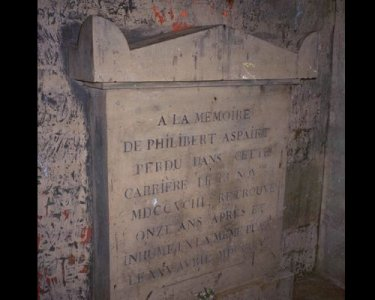
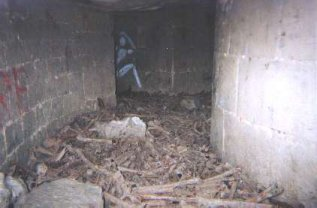
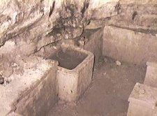
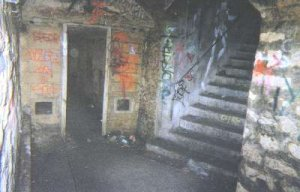
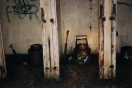

A notre grande surprise, nous vîmes de la lumière étrangère s'échapper de quelque
part derrière les nombreux piliers qui soutiennent la Plage. Des jeunes, garçons et
filles, buvaient leur bière et faisaient tourner le sbliff même aux nouveaux arrivés.
D'autres groupes étaient dispersés dans la salle, il y avait dans chaque groupe au moins
une lampe à acétylène comme celle de Seb. La salle suivante, Marie-Rose, à 300 mètres
de la Plage, était presque autant peuplée. Pendant notre balade, nous nous arrêtions un
instant dans chaque salle ou endroit particulier qui se trouvait sur notre chemin :
Byzance, le Cellier, la Boutique, les Dinos, la Librairie, le Cabinet minéralogique sont
tous des lieux qui ont leurs propres particularités.
Le Cabinet Minéralogique est également un haut lieu des Catas. On y trouve un petit
escalier qui servait de présentoir pour les différentes roches que les carriers
trouvaient lors du creusage des galeries. Un endroit très prisé pour les squats d'une
nuit, puisqu'on y trouve des pythons fixés dans les murs et les habitués du hamac y sont
toujours accrochés. Mais, si lorsqu'on s'arrête on enlève presque le pull, au bout
d'une heure sans bouger c'est le froid chargé d'humidité qui nous gèle, et là, il ne reste plus qu'à repartir,sauf si
on a pensé à emmener un duvet. En continuant, le faisceau de ma
lampe a rencontré un énorme nuage de fumée. Seb s'est alors mis à rire et dit :"Axan
doit être dans le coin, il aime bien le quartier et les fumigènes il les aime bien
aussi". Le fumigène d'Axan s'était répandu sur des centaines de mètres, nous plongeant dans une vision extrêment réduite, mais ça n'avait pas l'air de déranger Seb qui semblait plutôt ravi que la progression devienne plus difficile. Quelques minutes plus tard, nous avons bifurqué dans une galerie que le fumi avait radicalement oublié. Nous avançions sous le cimetière du Montparnasse et nous nous
approchions du "Carrefour des morts", un ossuaire non officiel. On pouvait
nettement voir qu'on s'en approchait à la vue du nombre croissant d'ossements humains au
bas des murs. "Ca fait froid dans le dos hein ? C'est l'accès à un des ossuaires du
coin", Seb nous montrait un petit trou dans le mur, que l'on appelle une chatière.
La galerie était couverte d'ossements et faisait seulement 60 centimètres de haut ! Seb
est passé le premier nous promettant une magnifique salle au bout. Evidemment il s'était
foutu de nous, et doublement, car le bout de la galerie était un cul-de-sac...
aller-retour en rampant sur les ossements... j'aurai dû m'en douter de la part de ce mec
! Nous avons continué en passant devant la tombe de Philibert Aspairt, un pauvre homme mort
de faim dans les catas il y a plus de 200 ans à une centaine de mètres de la sortie. Il
y a quelques années, il y a eu une fête mémorable pour le bicentenaire de la mort de
celui qui montre le chemin, le Saint-Patron des cataphiles.
 |
La tombe est souvent décorée d'une bougie encore allumée, une habitude pour rendre
hommage...
|
Nous sommes ressortis sans avoir vu le dixième des choses intéressantes du réseau du
14ème arrondissement : le Bunker allemand, la fontaine des Chartreux (une source d'eau
potable parait-il), l'abri Faco, la mythique et gigantesque salle Z, les souterrains du
Val de Grâce, l'Abri Laval, la Piscine, l'abri F.F.I... beaucoup de lieux chargés
d'Histoire. A Paris, les catacombes ou plutôt les vides de carrières souterraines
s'étendent principalement sous les 14, 15, 6 et 5ème arrondissements (environ 100 km de
galeries). Un autre réseau important se situe sous le 13ème arrondissement (25 km),
d'autres réseaux plus petits sous les 16ème et 20ème arrondissements.
 |
 |
Le carrefour des Morts, ossuaire principal |
La fontaine des Chartreux |
 |
 |
Abri Laval, aussi appelé abri des Feuillantines |
Toilettes du Bunker allemand sous le lycée Montaigne |
Il faut noter que les entrées des Catas sont inlassablement fermées (plaques soudées,
scellées, chatières d'accès au réseau injectées) par l'IGC (Inspection Générale des
Carrières) puis rouvertes par les cataphiles.
Merci à Cryptel qui ouvre désormais les plaques soudées avec la meuleuse branchée dans
le feu tricolore... et bonne balade sur la Petite Ceinture à la recherche de l'entrée...
Dafalgan,
pour Cryptel.
Linkographie : http://www.cyberkata.org.
Informations diverses sur les catacombes, nouvelles du monde cataphile, photos et plans.
Merci à Vatoo, Aaah, JM, Mikasoft et tous les autres qui m'ont accompagné lors de
descentes mémorables et parfois de plusieurs jours (merci Drahiin !).
Merci enfin à Yoda du zine Gogo.
CRYPTEL 1999: Distribution autorisée et conseillée d'ailleurs !
Citez juste les AUTEURS et les SOURCES par simple politesse :)